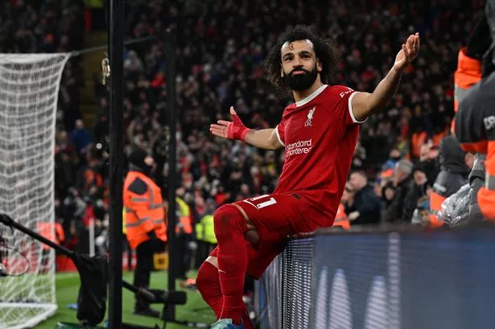
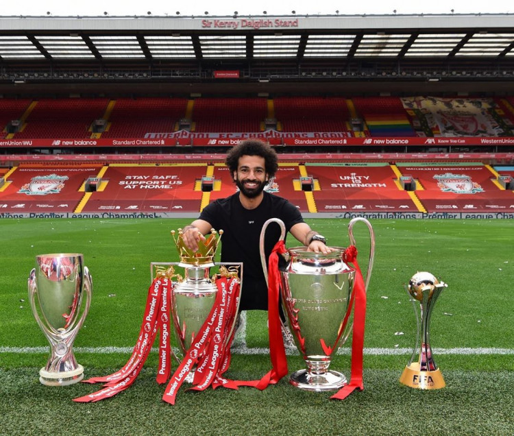
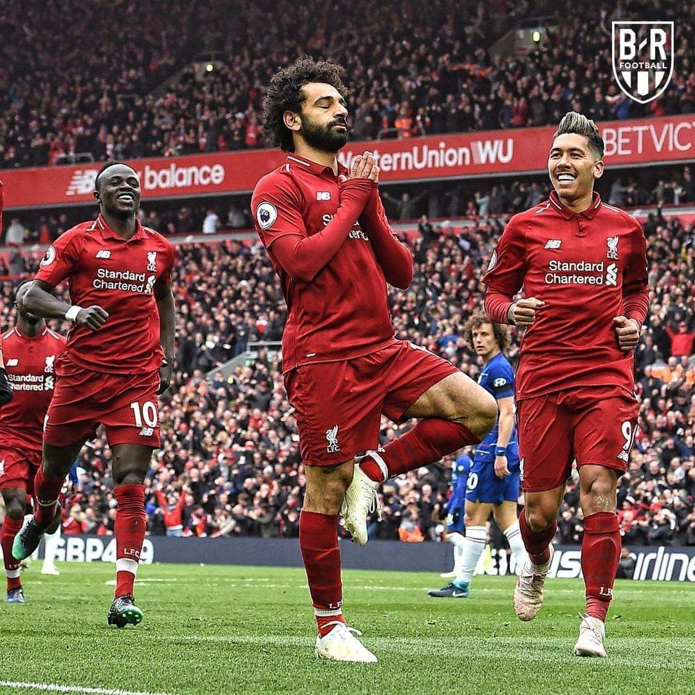

|  |
MOHAMED SALAH AFTER SCORING
Picture By Google |
Mohamed Salah merupakan sosok penting di lini serang Liverpool. Selama tiga musim berseragam The Reds, Salah berhasil mencetak puluhan gol dan merengkuh berbagai trofi bergengsi.
Winger Timnas Mesir itu resmi berseragam Liverpool pada 22 Juni 2017. Mohamed Salah ditebus The Reds dari AS Roma dengan banderol yang mencapai 37,8 juta poundsterling [Rp 710 miliar].
Kehadiran Salah membawa dampak positif untuk Liverpool. Pada musim perdana berseragam Si Merah, pemain berusia 28 tahun tersebut berhasil mendulang 44 gol dari 52 penampilan di seluruh ajang.
Jumlah tersebut adalah yang terbanyak sepanjang karier Mohamed Salah di level klub. Sayangnya, performa gemilang Salah gagal membawa Liverpool merengkuh trofi juara pada musim 2017-2018.
The Reds hanya mampu finis di peringkat keempat klasemen Premier League, kandas pada babak ketiga Piala Liga Inggris, terhenti pada babak keempat Piala FA, dan kalah dari Real Madrid dalam laga final Liga Champions.
Namun, kerja keras Mohamed Salah terbayarkan dalam dua musim terakhir. Pada musim lalu, produktivitas gol Salah hanya menyentuh angka 27 dari 52 penampilan di seluruh ajang.
Meski begitu, Mohamed Salah berhasil membawa Liverpool merengkuh tiga gelar juara pada 2019, mulai dari trofi Liga Champions, Piala Super Eropa, dan Piala Dunia Antarklub.
|  |
MOHAMED SALAH WITH THE TROPHY
Picture By Google |
Membantu Liverpool Menyudahi Puasa Gelar di Liga
Memasuki musim ini, Salah masih memperlihatkan performa terbaiknya. Dia sukses mencetak 23 gol dan 13 assist dari 48 pertandingan di seluruh ajang.
Kontribusi Mohamed Salah di lini serang sukses mengantarkan Liverpool menjuarai Premier League 2019-2020. The Reds berhasil mendulang 99 poin dari 38 pertandingan di liga, unggul angka 18 atas Manchester City yang menghuni peringkat kedua.
Bagi Liverpool, itu adalah trofi perdana di Liga Inggris dalam 30 tahun terakhir.
Skuat Si Merah terakhir kali menjadi juara di liga adalah pada musim 1989-1990 ketika masih bernama Football League First Division.
"Itu adalah hari yang baik untuk Liverpool [ketika Salah datang], dan hari yang sangat baik juga untuk Mo, karena sangat cocok dan itu sangat penting dalam hidupnya," puji manajer Liverpool, Jurgen Klopp.
"Anda tidak dapat mengubah dunia sendirian, tetapi bersama-sama, dengan orang-orang yang tepat di sekitar Anda, Anda memiliki kesempatan lebih baik untuk melakukannya," lanjut Klopp.
|  |
MOHAMED SALAH CELEBRATION
Picture By Google |
Menorehkan Rekor Yang Berkesan
Mohamed Salah menorehkan rekor saat mencetak gol di laga kontra Crystal Palace. Si Raja Mesir kini punya rekening 200 gol bersama Liverpool. Top!
Liverpool bertandang ke markas Crystal Palace pada pekan ke-16 Liga Inggris, Sabtu (9/12/2023). Tim tamu menang susah payah 2-1.
Crystal Palace unggul lebih dulu melalui gol penalti Jean-Philippe Mateta pada menit ke-57. Dewi Fortuna mulai berpihak ke Liverpool setelah tuan rumah bermain dengan 10 orang di menit ke-75 gegara kartu merah Jordan Ayew.
Mohamed Salah mencetak gol penyeimbang satu menit setelah Ayew diusir wasit. Liverpool memastikan kemenangan di injury time via gol Harvey Elliott.
Salah jadi sorotan usai laga Crystal Palace vs Liverpool. Golnya hari ini merupakan yang ke-200 sejak bermain untuk Merseyside Merah di semua kompetisi.
Gol tersebut mengantarkan Salah masuk buku rekor Liverpool. Si Raja Mesir menjadi pemain kelima dalam sejarah The Reds yang berhasil mencetak 200 gol atau lebih, catatan terbaik untuk pemain Liverpool di abad ke-21.
Salah juga menorehkan rekor dengan berhasil mengumpulkan 150 gol di Premier League. Dia menjadi pemain pertama asal Benua Afrika yang melakukannya.